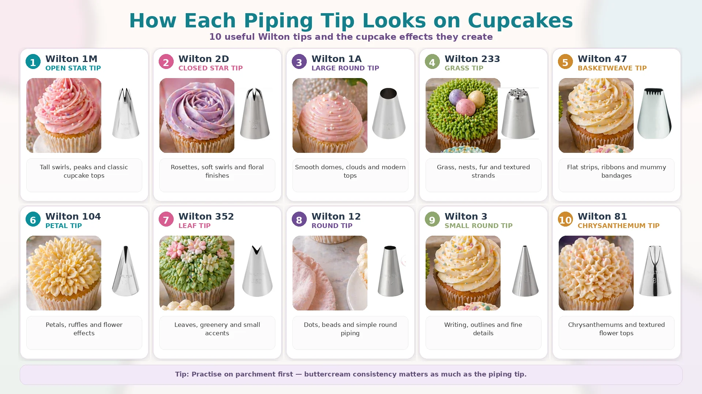
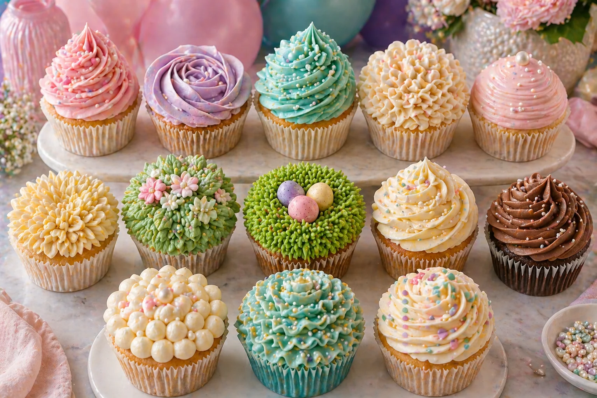

Walking into a cake decorating shop and looking at a wall of piping tips for the first time can feel overwhelming. There are hundreds of options, and most beginners end up buying a random set, struggling to get a clean result, and wondering what they bought wrong.
This guide cuts through the noise. It covers the ten piping tips that will actually get used — the ones that create clean swirls, rosettes, domes, nests, ruffles and leaves on cupcakes — along with clear guidance on which results each one gives and how to use them.
Whether you are decorating cupcakes for a birthday, a baby shower, or building a party dessert table, this guide explains what to buy and what to expect.
Quick Reference: Which Tip Does What
| Tip | Type | Effect | Difficulty |
|---|---|---|---|
| Wilton 1M | Open star | Classic tall swirl | Beginner |
| Wilton 2D | Closed star | Tight rosette | Beginner |
| Wilton 2A | Large round | Smooth dome | Beginner |
| Wilton 1A | Large round | Tall mounded dome | Beginner |
| Wilton 4B / 6B | Large open star | Chunky statement swirl | Beginner |
| Wilton 2F | Small closed star | Fine-detail rosette | Beginner–Intermediate |
| Wilton 104 | Petal | Ruffles and rose effect | Intermediate |
| Wilton 47 | Basketweave | Ribbed textured surface | Intermediate |
| Wilton 233 | Multi-opening grass | Grass, nest and fur effect | Beginner |
| Wilton 352 / leaf tip | Leaf | Individual leaf shapes | Beginner |

1. Wilton 1M — The Classic Swirl
The 1M is the most recommended piping tip for beginners and the most widely used tip in celebration baking. It is an open star tip, meaning the teeth of the star are spread apart, which creates a tall swirl with defined ridges and a clean, bakery-style finish.
How to use it: Start at the outer edge of the cupcake and pipe in a circular motion, working inward and upward. Finish with a small peak at the centre. The motion is continuous — do not stop and start or the swirl will show the joins. Practice the technique once on baking paper before decorating the actual cupcakes.
| Best for | Looks good with |
|---|---|
| Birthday cupcakes | Confetti sprinkles, gold leaf |
| Baby shower cupcakes | Pearl sprinkles, dried flowers |
| Christmas and Easter cupcakes | Seasonal sprinkles and fondant toppers |
Tip
If the swirl collapses or loses its shape, the buttercream is too soft. Chill it in the bowl for 5–10 minutes and beat briefly before refilling the bag. A firm buttercream makes the biggest difference to the final result.
2. Wilton 2D — The Rosette
The 2D is a closed star tip. The teeth sit closer together than the 1M, producing a more compact, finely detailed result. On cupcakes it creates a tight rosette — a flatter, layered shape that looks neat and considered rather than tall and dramatic.
How to use it: Start at the centre of the cupcake and pipe outward in a tight spiral, then loop back inward. Alternatively, pipe from the outside inward and finish with a clean lift at the centre. The rosette sits lower than a 1M swirl, which suits tables where you want a more controlled, uniform look.
| Best for | Notes |
|---|---|
| Elegant dessert tables | Neat and refined; ideal for premium events |
| Coordinating cupcake boxes | Uniform height makes boxing and transport easier |
| Fondant topper designs | Flat rosette gives a clean base for a topper |
3. Wilton 2A and 1A — The Smooth Dome
Large round tips create a smooth dome on top of a cupcake with no ridges or star marks. The 2A produces a wider, flatter dome; the 1A produces a taller mound. Both are extremely easy to use and give a very clean, professional result that looks difficult but is not.
How to use it: Hold the piping bag directly above the centre of the cupcake. Apply steady pressure and hold in place as the buttercream spreads to the edge of the cupcake. Reduce pressure slowly and lift upward cleanly to finish. For the smoothest finish, use a small palette knife dipped in warm water to smooth the surface after piping.
When to choose a smooth dome
A smooth dome is an excellent base for a fondant topper. The flat surface gives the topper more contact area, so it sits more stably than it would on a swirl or rosette. Good for baby shower feet toppers, number toppers and seasonal fondant designs.
4. Wilton 4B and 6B — The Statement Swirl
The 4B and 6B are large open star tips. They produce a similar swirl to the 1M but wider and more substantial — fewer, chunkier ridges rather than the fine definition of the 1M. The result is a bold, dramatic swirl that works well when you want the piping to be the centrepiece of the cupcake rather than a base for toppings.
How to use it: Same technique as the 1M — start at the outer edge and work inward and upward. The larger opening means more buttercream is deposited with each pass, so the swirl builds height quickly.
| Tip | Best for |
|---|---|
| 4B | Medium open star; slightly finer than 6B |
| 6B | Large open star; bold, chunky ridges |
5. Wilton 2F — Fine-Detail Rosette
The 2F is a smaller closed star tip that creates a more delicate rosette than the 2D. The finer teeth produce tighter, more intricate detail. It requires a slightly firmer buttercream to hold the definition and takes a little more practice to get right, but gives a refined result on premium dessert tables.
It is less commonly sold in beginner sets, but worth including if you want more variety across a display. A box of cupcakes with 1M swirls and 2F rosettes side by side gives a professional, layered look.
6. Wilton 104 — Petals and Ruffles
The 104 is a petal tip. It has a teardrop-shaped opening — one end wide, one end narrow — which creates thin, curved petal shapes when piped at an angle. On cupcakes it can be used to build a ruffle effect, a wrapped rose, or individual petal layers.
How to use it: Hold the piping bag with the wide end of the tip touching the cupcake surface and the narrow end facing outward. Pipe in a tight rocking motion to create ruffles, or build individual petals from the outside edge inward to create a rose. This tip requires more practice than the 1M or 2D but gives a distinctive result for floral-themed events.
| Best for | Colour suggestions |
|---|---|
| Floral and garden party themes | Blush pink, peach and ivory |
| Mother's Day and wedding cupcakes | Soft lavender, rose and champagne |
| Baby shower floral designs | Sage, blush and cream |
7. Wilton 47 — Basketweave and Ribbed Texture
The 47 is a basketweave tip with one flat side and one ridged side. It creates a textured, ribbed surface on a cupcake rather than a swirl or dome. It is most commonly used for basketweave decoration on cakes but on cupcakes it produces a clean, flat ribbed surface that contrasts well against a fondant topper.
How to use it: Hold the bag at a shallow angle and pipe horizontally across the top of the cupcake in parallel rows. Rotate between the flat side and ridged side to create alternating smooth and textured bands. This is less intuitive than the star tips and benefits from a practice run first.
Pairing suggestion
A ribbed 47 base works particularly well with a flat fondant topper — the horizontal lines contrast neatly with a smooth circle or fondant shape placed on top. Good for Easter, Halloween and themed celebration cupcakes.
8. Wilton 233 — Grass, Nests and Fur
The 233 is a multi-opening grass tip. It has multiple small holes that produce thin strands of buttercream simultaneously, creating a grass, fur or nest-like texture rather than a single piped shape. The result is unusual and very effective for specific seasonal designs.
How to use it: Hold the bag directly above the cupcake and apply pressure while pulling upward to create short grass or fur strands. To create a nest, pipe strands in a circular motion on the surface and build up in layers. Place small chocolate eggs, fondant eggs or sugar pearls in the nest to complete the design.
| Best for | Decoration to add |
|---|---|
| Easter cupcakes | Mini chocolate eggs or fondant chicks in the nest |
| Woodland and garden party themes | Small sugar flowers or fondant mushrooms |
| Jungle and dinosaur birthday themes | Plastic figurines or fondant leaves |
For a step-by-step example of the 233 in use, see our guide to Easter cupcake ideas, which uses the nest technique for the mini egg nest design.
9. Wilton 352 and Leaf Tips — Individual Leaves
Leaf tips produce a pointed, tapered shape that mimics a leaf. They are rarely used alone — they are most useful as a finishing detail alongside flower or floral-themed piped designs, or to add a natural element around fondant flowers on a cupcake.
How to use it: Hold the wide opening flat against the surface of the cupcake. Apply pressure until the base of the leaf forms, then release pressure and pull away sharply to create the pointed tip. The leaf lifts off the surface with a slightly curved shape. Green buttercream gives the most natural result, but ivory and champagne also work for more neutral palettes.
When to use a leaf tip
Leaf tips add finishing detail to floral designs but are not typically used as the primary decoration on a cupcake. They are most useful when styling a full dessert table where a mix of piped designs creates visual interest across the display.
10. Russian Ball Tips and Jumbo Tips — One-Press Flowers
Russian ball tips (sometimes called flower tips) are large multi-opening tips that produce a whole flower in a single press. They are not made by Wilton and are not part of the standard numbered set, but they are widely sold in UK cake decorating shops and produce a visually impressive result with very little technique required.
How to use it: Press the tip firmly against the surface of the cupcake and apply firm, steady pressure. Hold still for a moment and then lift cleanly. The result is a full flower shape — rose, dahlia or chrysanthemum depending on the tip design.
| Consideration | Notes |
|---|---|
| Buttercream consistency | Requires firmer buttercream than standard tips or the petals will blur together |
| Colour effect | Multi-colour ombre effect works well — fill the bag with two shades before pressing |
| Clean release | Rotate the bag slightly as you lift to detach cleanly |
Choosing the Right Tip for the Occasion

A single celebration table usually benefits from two or three piping styles rather than one. Mixing heights and textures across the cupcakes creates a more interesting display and makes the whole setup feel more considered.
| Occasion | Suggested tips | Why it works |
|---|---|---|
| Birthday party | 1M swirl + 2A dome for toppers | Height variation; dome gives clean base for number toppers |
| Baby shower | 1M swirl + 2D rosette | Soft and elegant; easy to colour match to balloon palette |
| Easter | 1M swirl + 233 nest | Height contrast; nest design adds seasonal detail |
| Christmas | 1M swirl + 2D rosette + 352 leaf | Classic festive look with three textures |
| Garden party | 104 petal rose + 352 leaf | Floral theme throughout |
| Mermaid party | 1M swirl + 104 ruffle | Swirl and wave textures complement the theme |
For more on how to pair cupcakes with a balloon display and colour scheme, see our guide to matching cupcakes with your balloon display.
A Sensible Starter Kit
Rather than buying a large generic set and never using most of it, the following five tips will cover most occasions and give you good variety from the start.
- Wilton 1M — the first tip to buy; used for almost every cupcake style
- Wilton 2D — rosettes and uniform dessert tables
- Wilton 2A — smooth domes as a base for fondant toppers
- Wilton 233 — seasonal designs such as Easter nests
- Wilton 104 — when you want a floral or ruffle finish
All five are sold individually from UK suppliers including Lakeland, The Cake Decorating Company, Cake Stuff and Amazon UK. Buying individually works out more economical than buying a large set if you know which tips you actually need.
Buttercream for Piping
The tip matters less than the buttercream consistency. Most piping problems come from buttercream that is too soft, too stiff, or has air bubbles trapped in the bag.
- Too soft: the swirl collapses and loses shape. Chill the buttercream for 5–10 minutes and beat briefly before refilling.
- Too stiff: the swirl tears or has an uneven surface. Add a teaspoon of milk or cream and beat until smooth.
- Air bubbles: the swirl has gaps or breaks. Squeeze the bag onto a piece of baking paper before decorating to push out any air pockets.
- Colour bleeding: gel food colours are more stable than liquid and will not thin the buttercream. Add colour gradually and mix thoroughly.
For colour-mixing guidance on specific shades — navy, teal, fuchsia and orange — we will cover the cling film ombre method and buttercream colour mixing in future guides.
Your Questions Answered
What is the best piping tip for beginners?
The Wilton 1M is the standard starting point. It is forgiving, widely covered in tutorials, and produces a clean result without requiring advanced technique. Once comfortable with the 1M, the 2D rosette is the natural second tip to learn.
What is the difference between a 1M and 2D piping tip?
The 1M is an open star tip — the points of the star are spaced apart and the resulting swirl has clear, defined ridges. The 2D is a closed star tip — the teeth sit tighter together and produce a more compact rosette shape with finer detail. The 1M creates a tall swirl; the 2D creates a neat, flatter rosette.
Can you use piping tips with a disposable piping bag?
Yes. Disposable piping bags work well with all the tips in this guide. For large tips, snip the bag opening so the tip fits without slipping. For smaller tips, use a coupler so you can switch tips without refilling the bag. Coupler sets are sold alongside tips at all UK cake suppliers.
How do you get a smooth dome on a cupcake?
Use the Wilton 2A and hold the piping bag directly above the centre. Apply steady pressure until the buttercream spreads to the edge, then reduce pressure and lift upward cleanly. For the smoothest finish, run a small palette knife dipped in warm water across the surface after piping.
What piping tip makes a rosette?
The Wilton 2D is the most popular choice for cupcake rosettes. Pipe from the centre outward in a tight circle, then lift cleanly to finish. The closed star teeth give the rosette its fine, layered definition.
What is the Wilton 47 used for on cupcakes?
The 47 creates a textured ribbed surface rather than a swirl. On cupcakes it works best as a base for a fondant topper rather than as a standalone decoration. The horizontal ribbed pattern contrasts well with a smooth fondant circle or themed topper placed on top.
At Little Moment Studio, our focus is balloon styling and celebration setups, but the most beautiful party tables feel coordinated from top to bottom. The right piping tip on your cupcakes can tie together the whole table — matching the shapes, textures and colours to your balloon display and linen for a cohesive result.
We do not make cupcakes ourselves, but we are happy to recommend a trusted local cake maker if you would like cupcakes or a cake to complement your balloon display.
For cupcake design ideas by theme, see our guides to birthday cupcake ideas, baby shower cupcake ideas, mermaid cupcake ideas, Easter cupcake ideas, Halloween cupcake ideas and Christmas cupcake ideas.
For fondant topper techniques, see our guide to fondant cupcake ideas for baby showers and birthdays.
Planning a Celebration in Sittingbourne or Kent?
Little Moment Studio creates coordinated balloon displays and styled celebration setups across Sittingbourne and Kent. We can also recommend a trusted local cake maker to help complete your dessert table.